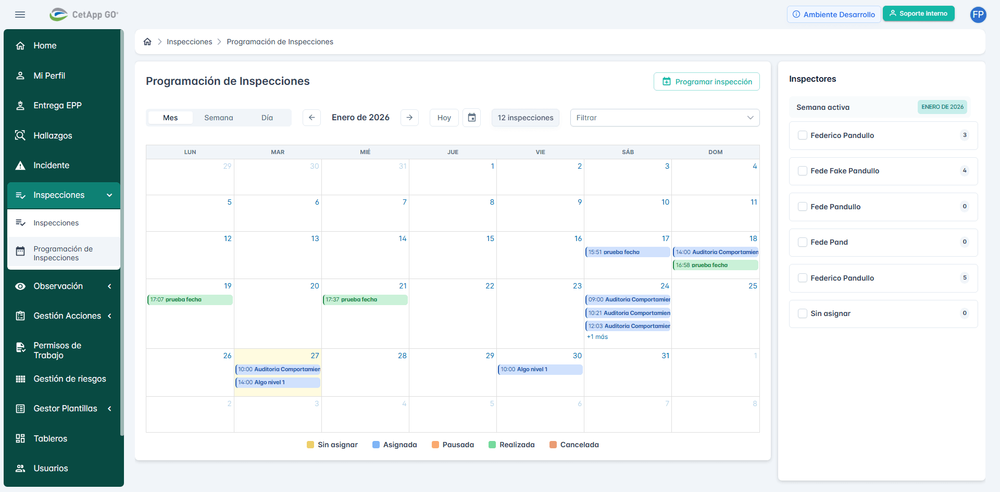
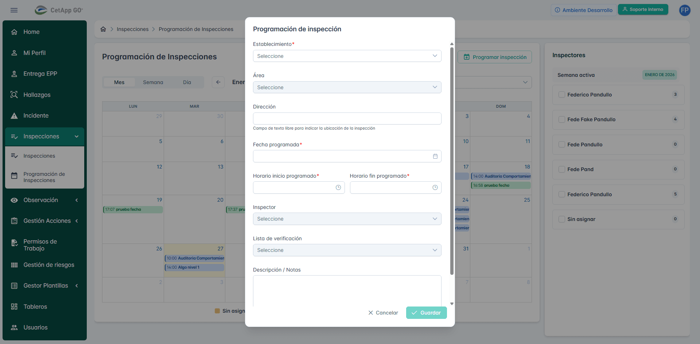
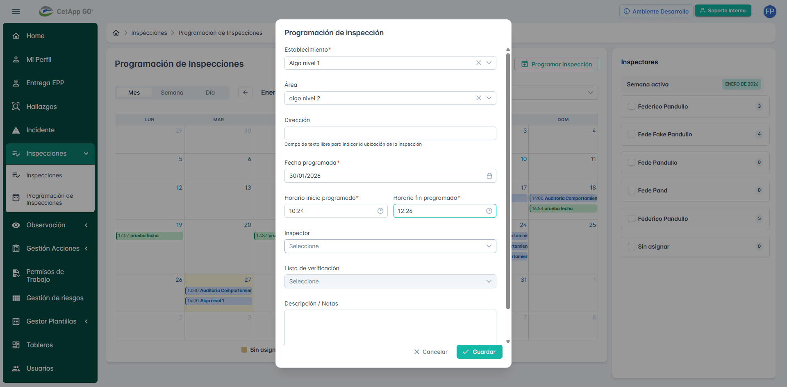
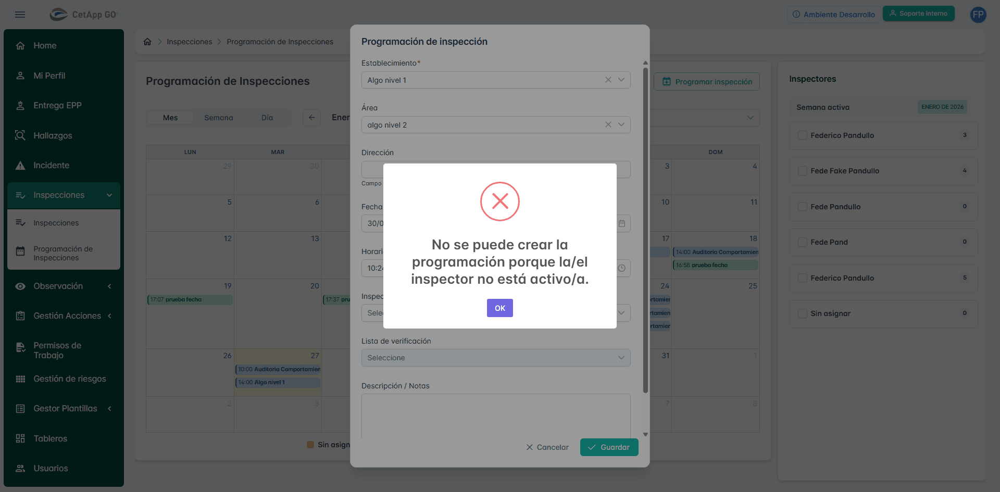
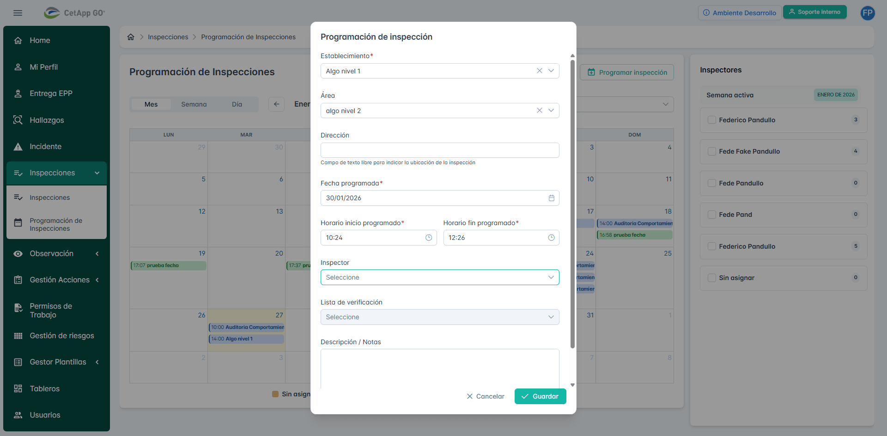

📋 Información General
🎯 Objetivo
Verificar que un usuario con permiso "Programar Inspecciones" pueda dar de alta una nueva programación de inspección completando solo los campos obligatorios y que la programación se muestre correctamente en el calendario.
⚠️ Análisis de Falla
Error Detectado: Inconsistencia entre especificación del caso de prueba y comportamiento del sistema.
Descripción:
El caso de prueba TC-001 especifica en el paso 7: "En el campo Inspector, mantener la opción 'Sin asignar' (valor por defecto)"
Sin embargo, al intentar guardar la programación con este valor, el sistema muestra el siguiente error de validación:
Hallazgo Adicional:
Al abrir el dropdown del campo "Inspector", se observa que la opción "Sin asignar" NO está disponible en la lista de selección durante la creación de una nueva programación. El dropdown solo muestra inspectores activos:
• Fede Fake Pandullo
• Fede Pand
• Fede Pandullo
• Federico Pandullo (dos instancias)
Conclusión:
Existe una de tres posibles situaciones:
1. Bug en la aplicación: El sistema debería permitir crear programaciones con inspector "Sin asignar"
2. Caso de prueba desactualizado: La especificación debe actualizarse para requerir la selección de un inspector activo
3. Configuración faltante: La opción "Sin asignar" debe configurarse como un inspector válido en el sistema
Recomendación: Revisar con el equipo de producto si "Sin asignar" debe ser una opción válida o si el caso de prueba debe modificarse.
Descripción:
El caso de prueba TC-001 especifica en el paso 7: "En el campo Inspector, mantener la opción 'Sin asignar' (valor por defecto)"
Sin embargo, al intentar guardar la programación con este valor, el sistema muestra el siguiente error de validación:
"No se puede crear la programación porque la/el inspector no está activo/a."Hallazgo Adicional:
Al abrir el dropdown del campo "Inspector", se observa que la opción "Sin asignar" NO está disponible en la lista de selección durante la creación de una nueva programación. El dropdown solo muestra inspectores activos:
• Fede Fake Pandullo
• Fede Pand
• Fede Pandullo
• Federico Pandullo (dos instancias)
Conclusión:
Existe una de tres posibles situaciones:
1. Bug en la aplicación: El sistema debería permitir crear programaciones con inspector "Sin asignar"
2. Caso de prueba desactualizado: La especificación debe actualizarse para requerir la selección de un inspector activo
3. Configuración faltante: La opción "Sin asignar" debe configurarse como un inspector válido en el sistema
Recomendación: Revisar con el equipo de producto si "Sin asignar" debe ser una opción válida o si el caso de prueba debe modificarse.
📝 Pasos Ejecutados
1
Navegación: Acceso al módulo Inspecciones → Programación de Inspecciones
2
Apertura de modal: Click en botón "Programar inspección"
3
Selección de Establecimiento: "Algo nivel 1" (Jerarquía Nivel 1)
4
Selección de Área: "algo nivel 2" (Jerarquía Nivel 2, filtrada correctamente)
5
Campo Dirección: Dejado vacío (opcional)
6
Fecha programada: 30/01/2026
7
Horario inicio: 10:24
8
Horario fin: 12:26
9
Inspector: Intentó dejar como "Seleccione" (por defecto, según especificación debería ser "Sin asignar")
10
Lista de verificación: No seleccionada (opcional)
11
Descripción/Notas: Dejado vacío (opcional)
12
Intento de guardado: Click en botón "Guardar" → ERROR DE VALIDACIÓN
13
Verificación adicional: Apertura del dropdown Inspector para validar opciones disponibles
14
Hallazgo: Confirmado que "Sin asignar" NO está en la lista de opciones
❌ Validaciones Fallidas
Esperado: No se muestren mensajes de error de validación
Actual: Error "No se puede crear la programación porque la/el inspector no está activo/a"
Actual: Error "No se puede crear la programación porque la/el inspector no está activo/a"
Esperado: El modal de Alta de Programación de Inspección se cierre
Actual: El modal permanece abierto mostrando error
Actual: El modal permanece abierto mostrando error
Esperado: La nueva programación se muestre en el calendario
Actual: No se creó la programación
Actual: No se creó la programación
Esperado: Inspector se muestre como "Sin asignar"
Actual: Opción "Sin asignar" no disponible en el dropdown
Actual: Opción "Sin asignar" no disponible en el dropdown
📊 Resultados JSON
{
"ticket_id": "TC-001",
"parent_ticket": "PG-3154",
"status": "FAIL",
"fecha_ejecucion": "2025-01-17",
"ambiente": "localhost:4173",
"usuario": "fpandullo@cetapsa.com",
"error_encontrado": {
"tipo": "Validación de negocio",
"mensaje": "No se puede crear la programación porque la/el inspector no está activo/a.",
"paso_fallido": 10,
"accion": "Guardar programación de inspección"
},
"datos_utilizados": {
"establecimiento": "Algo nivel 1",
"area": "algo nivel 2",
"fecha_programada": "30/01/2026",
"horario_inicio": "10:24",
"horario_fin": "12:26",
"inspector": "Seleccione (sin asignar)"
},
"hallazgo_adicional": "La opción 'Sin asignar' no está disponible en el dropdown Inspector durante la creación",
"evidencias_generadas": 5
}
📸 Evidencias
1. Calendario Inicial
Estado inicial del calendario de programación de inspecciones antes de crear nueva programación
2. Modal Vacío
Modal "Programación de inspección" recién abierto, mostrando todos los campos vacíos
3. Formulario Completo
Formulario completado con todos los campos obligatorios antes de intentar guardar
4. Error de Validación ⚠️
Diálogo de error mostrado al intentar guardar: "No se puede crear la programación porque la/el inspector no está activo/a"
5. Opciones Inspector 🔍
Dropdown Inspector mostrando que "Sin asignar" NO está disponible como opción durante la creación
